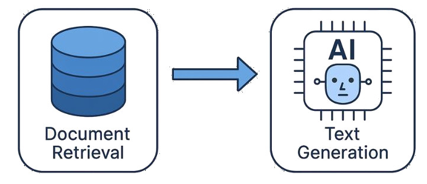
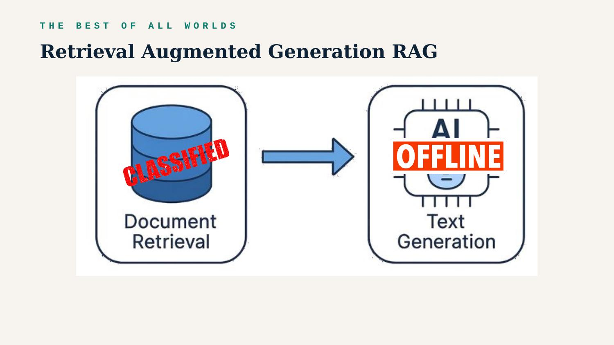
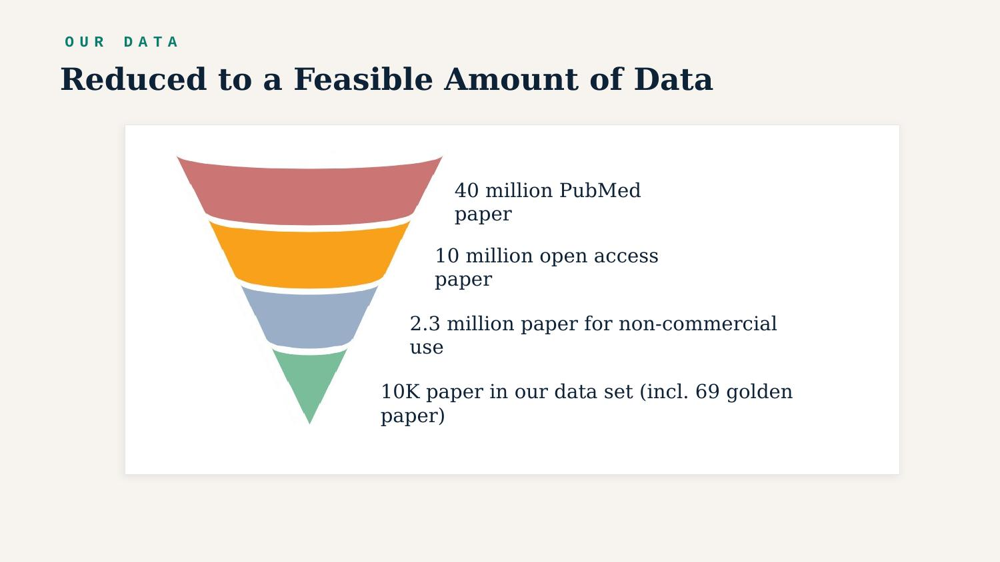
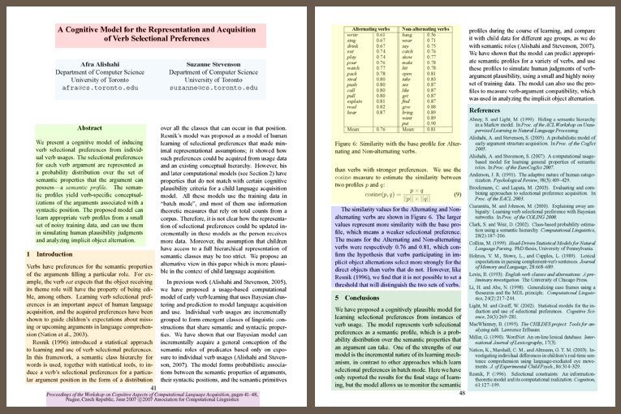
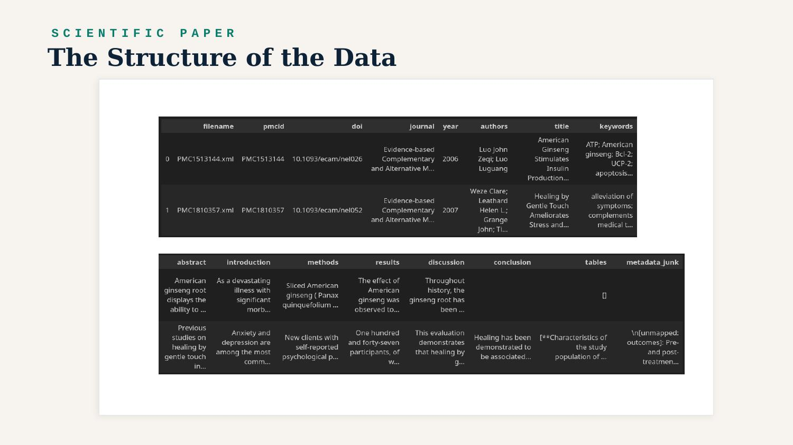
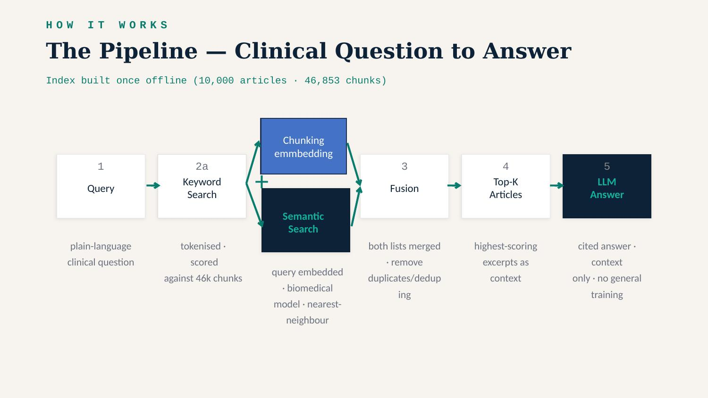
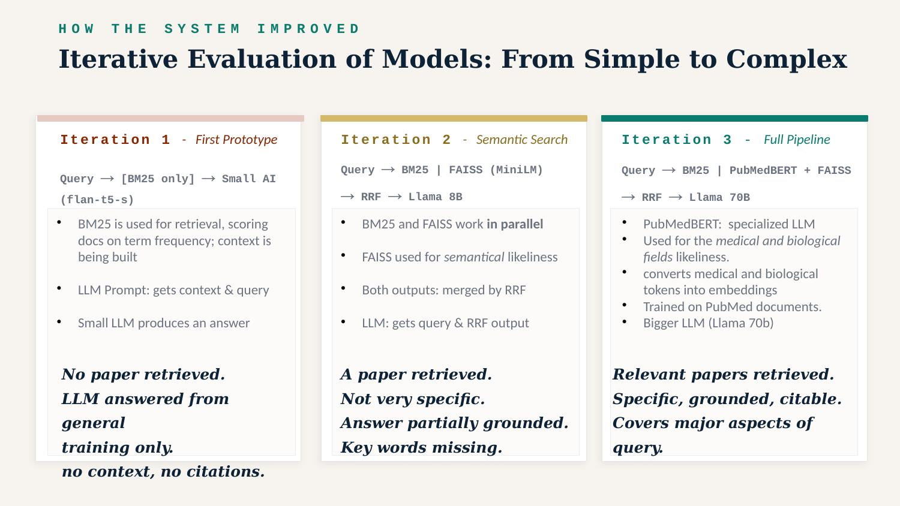
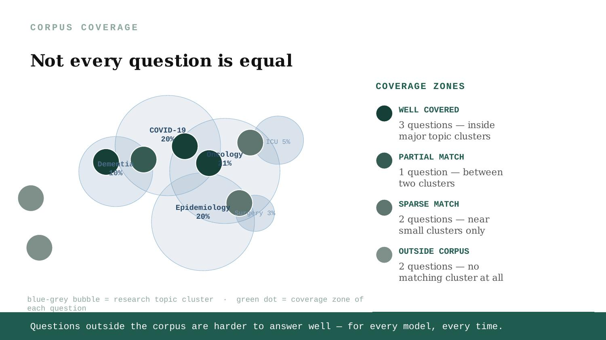
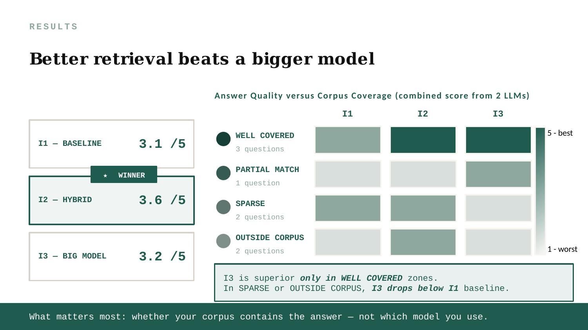

NEUE FISCHE · CAPSTONE I · 2025/26
With a knowledge-based AI Assistant
BRAVE NEW AI
WHEN YOU ASK AN LLM
WHEN YOU ASK AN LLM
End of Story?
PROBLEM 1
WHY IS RELIABILITY A PROBLEM FOR AI?

PROBLEM 2
THE BEST OF ALL WORLDS
THE BEST OF ALL WORLDS

OUR GOAL
Proof of concept for many business applications
OUR USE CASE
OUR USE CASE
The PubMed Q&A Dataset

SCIENTIFIC PAPER


- The Pipeline -


EVALUATION


DEMO · PMC RESEARCH ASSISTANT
Demo mimics a live run
The answer...
DEMO · PMC RESEARCH ASSISTANT
Demo mimics a live run
DEMO · PMC RESEARCH ASSISTANT
Demo mimics a live run
Some patients with non-small cell lung cancer stop responding to checkpoint inhibitors due to the heterogeneity of tumor biology. Tumors with high PD-L1 expression are more likely to respond, but the presence of other mutations — such as EGFR, ALK, or ROS1 — can affect treatment efficacy. A second factor is the development of immune-related adverse events: a PD-L1 tumor proportion score of 1% or higher is associated with a higher risk of side effects, which can force treatment discontinuation. The exact mechanisms behind resistance are not yet fully understood, and further research into the tumor microenvironment is ongoing.
Sources: PMC9641362 · PMC12273668 · PMC12170212 · PMC8880835
WHAT'S NEXT